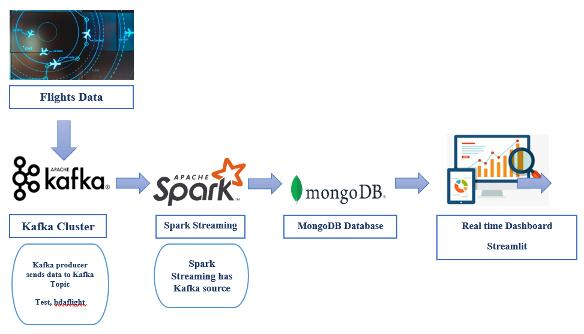

Projects
A curated collection of my work, demonstrating practical experience in robotics, reinforcement learning, and large-scale data systems.
5 results
Edge-Optimized LLM for Autonomous Robotics
- Led a team of four in developing an offline mobile robot using a fine-tuned, quantized 4-bit Llama3 model with a Whisper model for speech processing and ROS, eliminating cloud dependencies for real-time execution.
- Optimized motion planning, achieving 96% positional and 93% rotational accuracy with 400ms latency, enhancing navigation in dynamic environments.
LIGO Data Analysis using Matrix Profiles
- Analyzed LIGO gravitational wave data using Python, including data extraction, frequency analysis, and matrix profiling for signals from Hanford (H1) and Livingston (L1) detectors.
- Improved detection accuracy and insights into cosmic events by processing signals and recognizing anomalies in gravitational waves.
Adaptive Tortoise-Inspired Soft Robot
- Built a modular tortoise-inspired soft quadruped robot with fiber-reinforced pneumatic legs and a 3D-printed TPU body; implemented teleoperated gait control via electro-pneumatic valves.
- Validated bending with constant-curvature modeling + Abaqus FEA, and demonstrated multi-surface locomotion (up to 30° incline) and object pickup/transport using a granular-jamming gripper (~30g payload).
Robotic Arm for Color Sorting using Reinforcement Learning
- Directed a team of three in designing a robotic arm for color sorting, enabling object classification into respective bins based on color by maximizing rewards through adaptive decision-making.
- Supervised the integration of Python and reinforcement learning algorithms to enhance sorting accuracy and scalability.

Real-Time Flight Delay Prediction System
- Collaborated with a team to build a real-time flight delay prediction system using Kafka, Spark, and MongoDB, achieving a 20% increase in prediction accuracy over existing architectures.
- Generated data processing workflows and machine learning models to optimize the decision-making process for airport operations.